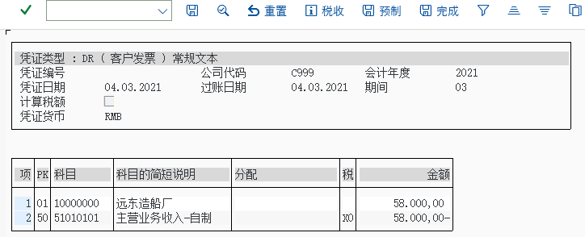
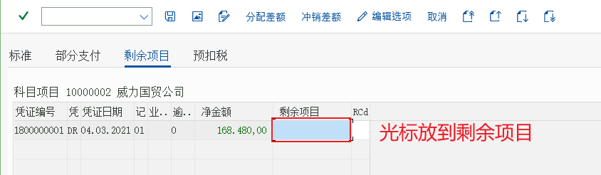
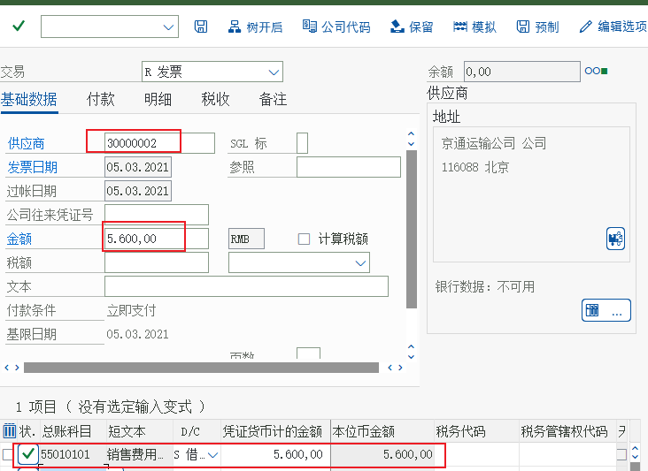
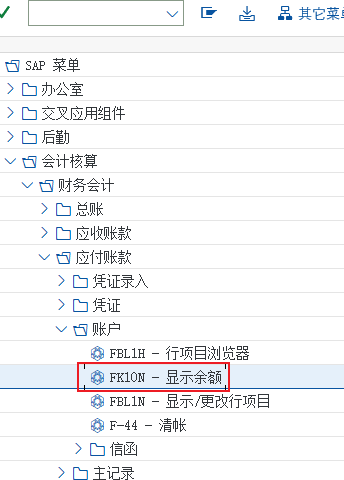
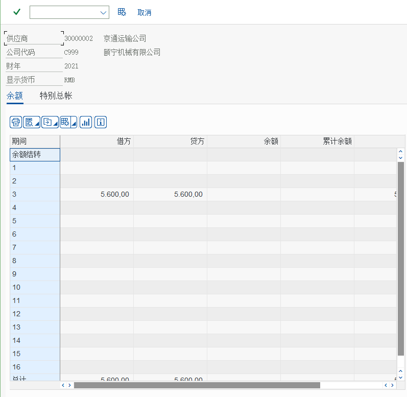
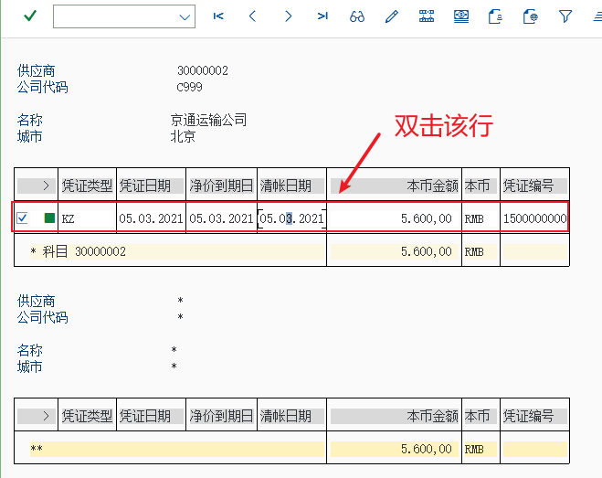
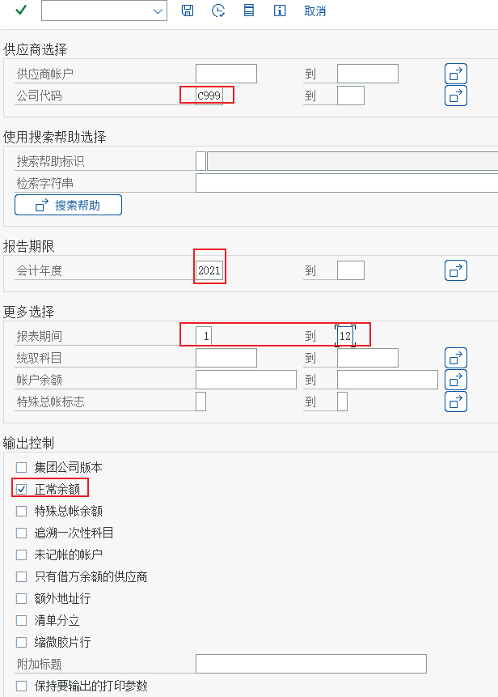
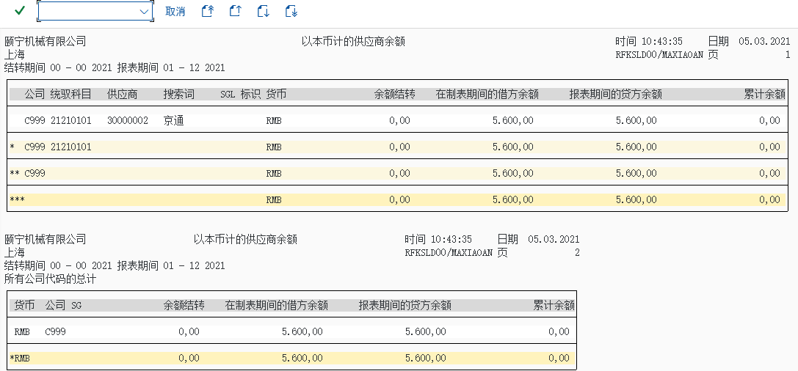

流程② 应收应付
FB70/FB60 发票 · F-28/F-53 收付款与清账 · FD10N/FK10N 余额
应收应付篇回答「钱怎么进来、怎么出去」：FB70 开客户发票 → F-28 收款清账 → 看客户余额（FD10N）；FB60 录供应商发票 → F-53 付款清账 → 看供应商余额（FK10N）。教材 FI 的任务 32–41 就是这条线。
教学场景与前置条件
| 前置 | 内容 | 教材任务 |
|---|---|---|
| 组织 | 公司代码 C999；客户编号范围 Z1 10000000–19999999、Z2 20000000–29999999；供应商编号范围 Z2 20000000–29999999、Z3 30000000–39999999 | 24–28 |
| 主数据 | 客户 10000000 远东造船厂（统驭科目 11310101、排序码 001）；供应商 30000002 京通运输公司等（统驭科目 21210101） | 29–31 |
| 科目 | 应收账款 11310101、应付账款 21210101、银行存款 10020101、收入 51010101、销项税 21710102、进项税 21710101 | 10–13、21 |
| 容差 | 应收应付容差组（手工对外支付容差）；雇员容差组控制单张凭证金额 | 19、22 |
| 环境值 | 会计年度 2021、期间 3；客户发票含税 58.000；付款 5.600,00 | （教材画面） |
客户/供应商的每一笔业务都落在明细账（未清项）上，同时在统驭科目（11310101 / 21210101）上汇总一条总账记录。收款/付款时做清账（clearing）：把收款与未清的发票配对，未清项变已清项，应收/应付余额随之减少。
所以 FI 的应收应付是「两张表在动」：明细（BSID/BSIK）与总账汇总（FAGLFLEXT）；对不上说明有未过账的预制凭证或统驭科目配错。
手顺① 客户发票 FB70（任务 32）
输入客户发票
FB70卖给远东造船厂一批货物，含税销售额 58000 需要录入相应的会计凭证
FB70
画面 1教材《S4.docx》· FI 任务 32 输入客户发票 · 原图 01_1_image229.png 
画面 2教材《S4.docx》· FI 任务 32 输入客户发票 · 原图 01_2_image230.png 原书提示模拟
画面 3教材《S4.docx》· FI 任务 32 输入客户发票 · 原图 02_1_image231.png
{kind=link}
手顺② 收到客户全额还款 F-28（任务 33）
收到客户全额还款

画面 4教材《S4.docx》· FI 任务 33 收到客户全额还款 · 原图 01_1_image232.png 解释：全额则只需要清账,而部分还款则需要先清掉原来的帐单,再把剩余的金额生成另外一张单
会计－财务会计－应收帐款－凭证输入－F-28 收款
画面 5教材《S4.docx》· FI 任务 33 收到客户全额还款 · 原图 02_1_image233.png 
画面 6教材《S4.docx》· FI 任务 33 收到客户全额还款 · 原图 02_2_image234.png 模拟

画面 7教材《S4.docx》· FI 任务 33 收到客户全额还款 · 原图 03_1_image235.png 
画面 8教材《S4.docx》· FI 任务 33 收到客户全额还款 · 原图 04_1_image236.png
手顺③ 收到客户部分还款（任务 34）
收到客户部分还款
FB70
画面 9教材《S4.docx》· FI 任务 34 收到客户部分还款 · 原图 01_1_image237.png 
画面 10教材《S4.docx》· FI 任务 34 收到客户部分还款 · 原图 02_1_image238.png 
画面 11教材《S4.docx》· FI 任务 34 收到客户部分还款 · 原图 03_1_image239.png 原书提示点击剩余项目光标放到剩余项，双击

画面 12教材《S4.docx》· FI 任务 34 收到客户部分还款 · 原图 04_1_image240.png 模拟

画面 13教材《S4.docx》· FI 任务 34 收到客户部分还款 · 原图 05_1_image241.png 双击凭证 002 行

画面 14教材《S4.docx》· FI 任务 34 收到客户部分还款 · 原图 06_1_image242.png 
画面 15教材《S4.docx》· FI 任务 34 收到客户部分还款 · 原图 06_2_image243.png 原书提示返回后保存
{kind=link}
手顺④ 收到供应商发票 FB60（任务 37、38）
收到供应商发票
FB60会计－财务会计－应付帐款－凭证输入－FB60 发票

画面 16教材《S4.docx》· FI 任务 37 收到供应商发票 · 原图 01_1_image251.png 
画面 17教材《S4.docx》· FI 任务 37 收到供应商发票 · 原图 01_2_image252.png 
画面 18教材《S4.docx》· FI 任务 37 收到供应商发票 · 原图 01_3_image255.png
{kind=link}
模拟

画面 19教材《S4.docx》· FI 任务 38 模拟 · 原图 01_1_image257.png
手顺⑤ 向供应商付款 F-53（任务 39）
向供应商付款
会计－财务会计－应付帐款－凭证输入－付款－F-53 过帐

画面 20教材《S4.docx》· FI 任务 39 向供应商付款 · 原图 01_1_image258.png 
画面 21教材《S4.docx》· FI 任务 39 向供应商付款 · 原图 02_1_image259.png 
画面 22教材《S4.docx》· FI 任务 39 向供应商付款 · 原图 03_1_image260.png 原书提示模拟
手顺⑥ 客户余额与供应商余额（任务 36、41）
显示客户余额
FD10N会计－财务会计－应收帐款－账户－FD10N

画面 23教材《S4.docx》· FI 任务 36 显示客户余额 · 原图 01_1_image249.png 
画面 24教材《S4.docx》· FI 任务 36 显示客户余额 · 原图 02_1_image250.png
显示供应商余额
FK10N会计－财务会计－应付帐款－账户－FK10N－显示余额

画面 25教材《S4.docx》· FI 任务 41 显示供应商余额 · 原图 01_1_image264.png 
画面 26教材《S4.docx》· FI 任务 41 显示供应商余额 · 原图 02_1_image265.png 
画面 27教材《S4.docx》· FI 任务 41 显示供应商余额 · 原图 02_2_image266.png 
画面 28教材《S4.docx》· FI 任务 41 显示供应商余额 · 原图 03_1_image269.png 原书提示双击第3行的行项目
{kind=link}
{kind=link}
{kind=link}
手顺⑦ 余额报表（任务 35、40）
显示应收帐款余额
会计－财务会计－应收帐款－信息系统－应收帐款会计核算报表－客户余额—s_alr_87012172

画面 29教材《S4.docx》· FI 任务 35 显示应收帐款余额 · 原图 01_1_image244.png 
画面 30教材《S4.docx》· FI 任务 35 显示应收帐款余额 · 原图 01_2_image245.png
显示应付帐款余额

画面 31教材《S4.docx》· FI 任务 40 显示应付帐款余额 · 原图 01_1_image261.png 
画面 32教材《S4.docx》· FI 任务 40 显示应付帐款余额 · 原图 01_2_image262.png 
画面 33教材《S4.docx》· FI 任务 40 显示应付帐款余额 · 原图 01_3_image263.png
{kind=link}
{kind=link}
清账机制（这一页最该讲透的部分）
| 概念 | 含义 | 教材里的证据 |
|---|---|---|
| 未清项 Open Item | 还没被收付款清掉的发票（客户记在 BSID、供应商记在 BSIK） | 任务 32 的发票、任务 37 的供应商发票在收款/付款前都是未清项 |
| 已清项 Cleared Item | 被清账后的行项目（客户 BSAD、供应商 BSAK） | 任务 33 全额收款后，发票与本笔收款互相标记为已清 |
| 全额清账 | 收款金额 = 发票金额，一次清掉 | 任务 33（教材原文：全额则只需要清账） |
| 部分清账 / 剩余项目 | 只清一部分，剩余金额继续挂账（或产生新凭证） | 任务 34 的「剩余项目」画面；教材提示先做一张 164800 的发票 |
| 有借必有贷、清账不产生损益 | 清账只改变未清状态与科目余额，不产生损益 | 客户收款：借银行存款 / 贷客户（冲减应收账款） |
| 自动清账 / 自动付款 | 系统按规则批量清账（F.13）与批量付款（F110） | 教材未演示；项目上月末必用，讲课要提一句 |
| 教材里的应收应付金额（可当课堂练习素材） | 数值 | 对应任务 |
|---|---|---|
| 客户发票（含税销售额） | 58.000 | 任务 32（FB70），任务 36 FD10N 显示余额 58.000,00 |
| 部分收款场景的发票 | 164.800 | 任务 34（教材提示先用 FB70 做这张发票） |
| 向供应商付款 | 5.600,00 | 任务 39（F-53，供应商 30000002 京通运输公司） |
| 银行存款科目在报表里的余额 | 147.200（其中工行 2.800 / 中行 144.400） | 任务 45 资产负债表画面 |
| 应收账款在报表里的余额 | 76.480 | 任务 45 资产负债表画面 |
常见错误与排查
| 症状 | 原因 | 处理 |
|---|---|---|
| FB70 保存报「客户未在公司代码下维护」 | 客户只建了一般数据，没有公司代码层（统驭科目缺） | FD01/FD02 补公司代码层：统驭科目 11310101、排序码 001（任务 29） |
| FB70 抬头带不出客户名称 | 客户号输错或编号范围/账户组不匹配 | 用 FD03 确认客户号；检查账户组分配编号范围（任务 28） |
| 过账报「统驭科目未定义」 | 客户/供应商的统驭科目填了但不属于当前科目表 | 把统驭科目改成 A999 科目表下的 11310101 / 21210101（任务 11） |
| F-28 清不了账（找不到要清的发票） | 发票还没过账、或公司代码/客户不一致 | FD10N 确认未清项；预制凭证要先过账 |
| F-28 金额与发票不等还想清账 | 金额小于发票 → 部分清账；大于 → 会产生贷项 | 用「剩余项目」检查差额；差异在容差内可以带出（容差组任务 22） |
| F-53 提示「没有可清的项目」 | 选错了供应商/公司代码，或该发票已被清 | FK10N 逐行看未清项与清帐日期 |
| 报表余额与明细加起来不等 | 有未过账的预制凭证；或统驭科目被人改过 | 先查预制凭证（FBV0），再核对统驭科目配置 |
上下游关系：应收应付的上游是 SD/MM 的自动记账（开票与发票校验会把凭证送进来），下游是期末的余额表与报表（见 期末篇）；科目本身怎么建见 总账篇 与 主数据页。